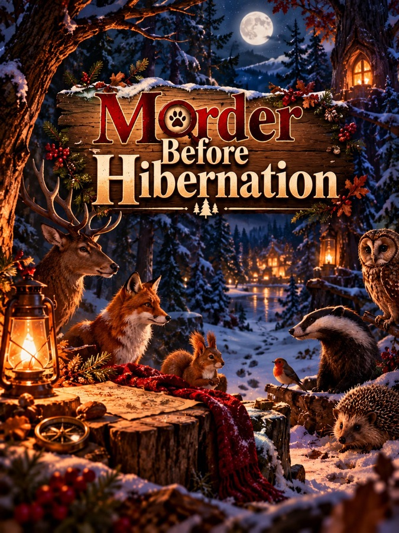

Murder mystery dinner · Fairytale
Murder Before Hibernation
An autumn forest of talking animals
- Players
- 5–7
- Duration
- approx. 3 hrs
- Difficulty
- Medium
- Price
- €8.99 · PDF
Perfect for: Birthday Halloween party
Secure payment and instant PDF download via Murdernight – a shop I co-own.
Menu for this case
Three courses from my videos – every recipe is free.


Who's at the table
7 characters – everyone plays one. Tap a name for more, no spoilers.
Bruno BearElder of the Forest, honey brewer and host of the Honeypaw
Bruno is big, good-natured and tired by nature; for weeks he has been longing for his hibernation. His honey wine is famous all over the forest, his memory in autumn is not.
Mika RoeForest Courier
Mika carries the mail through the whole forest and knows every path and every sender. Mika is faster on the runs than in conversation, but not by much, and flinches at every crack in the underbrush.
Frieda FoxTracker and honorary Forest Police Officer
Frieda reads tracks the way other people read the newspaper. Because she is a fox, she is the first to be suspected of every misdeed in the forest, and she takes it with dry humor.
Hanna MagpieCurio dealer and collector (anything that glitters)
Hanna deals in anything that glitters, rattles or ended up in the two-legs' trash. She talks fast, flatters freely and has a story for every piece, usually a better one than the piece deserves.
Dieter BadgerMaster Builder of Earthworks and Tunnels
Dieter digs tunnels that hold, and hates shoddy work wherever he finds it. He rarely says more than he has to, and what he says can usually be measured.
Egon SquirrelMaster of the Stores of the Community Granary
Egon keeps the books on the whole forest's winter supplies and knows at any hour how many acorns are lying where. He talks fast, counts constantly, and is convinced that without him winter wouldn't even take place.
Maria MouseHerb gatherer and tea supplier
Maria knows every herb in the forest and supplies her tea to half the neighborhood. She is small, quiet and polite, and when something goes missing in the forest, everyone looks at her first.
How the evening works
Buy & print
Instant PDF after payment – print it or play from your phones.
Cook the menu
Starter, main and dessert from the recipes above.
Solve the case
Everyone plays a role – the case unfolds between the courses.
Questions
How many players do I need?
Murder Before Hibernation is written for 5–7 players. Need a case for a different group size? All 9 cases are on the overview page.
How long does the evening take?
Plan about 3 hours, including dinner – the case is solved between the courses.
Do I have to print anything?
No. You can print the PDF at home or play straight from your phones.
Which language is the game in?
This version is in English. All 9 cases are also available in German at murdernight.de.
How do I get the PDF?
Pay at Murdernight, the shop I co-own – card, PayPal, Apple Pay and more. The PDF is ready to download right after payment.
Ready to host Murder Before Hibernation?
5–7 players · approx. 3 hrs · €8.99, instant PDF via Murdernight.